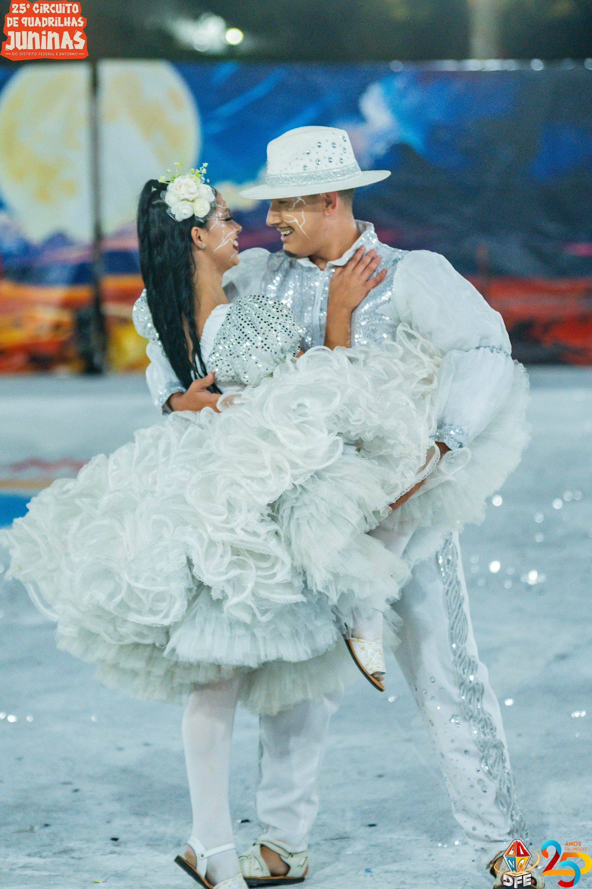

Tengo Lengo
A Quadrilha Tengo Lengo é de Ceilândia/DF e completa 20 anos de história em 2026.
SOBRE A QUADRILHA
A Quadrilha Tengo Lengo é de Ceilândia/DF e completa 20 anos de história em 2026. Fundada em 2006 por um grupo de jovens da escola do Ensino Médio 9, a quadrilha cresceu e se profissionalizou, participando de eventos e competições em Brasília e região. Cada integrante contribui para manter viva a tradição junina, trazendo disciplina, dedicação e amor pela cultura nordestina em cada apresentação.
Tema 2025: "Os Nazarenos e a Peleja com Lampi√£o".
Com 9 casais de brincantes, casal de personagens, rei e rainha, e marcador, a Tengo Lengo se destaca pelo cuidado nos figurinos e coreografias, que alternam momentos de cangaço e sertão, com cores terrosas, tons de vinho, dourado e laranja, simbolizando a fé, o trabalho e a vida no sertão. Representando Ceilândia no circuito do DF e Entorno, o grupo combina narrativa teatral, dança e música, proporcionando experiências emocionantes e envolventes para o público.
Tema 2025: "Os Nazarenos e a Peleja com Lampião".
Com 9 casais de brincantes, casal de personagens, rei e rainha, e marcador, a Tengo Lengo se destaca pelo cuidado nos figurinos e coreografias, que alternam momentos de cangaço e sertão, com cores terrosas, tons de vinho, dourado e laranja, simbolizando a fé, o trabalho e a vida no sertão. Representando Ceilândia no circuito do DF e Entorno, o grupo combina narrativa teatral, dança e música, proporcionando experiências emocionantes e envolventes para o público.
Histórico no Circuito
| Ano | Grupo | PosiÁ„o | PontuaÁ„o total |
|---|---|---|---|
| 2025 | Acesso | 9∫ | 526.7 |